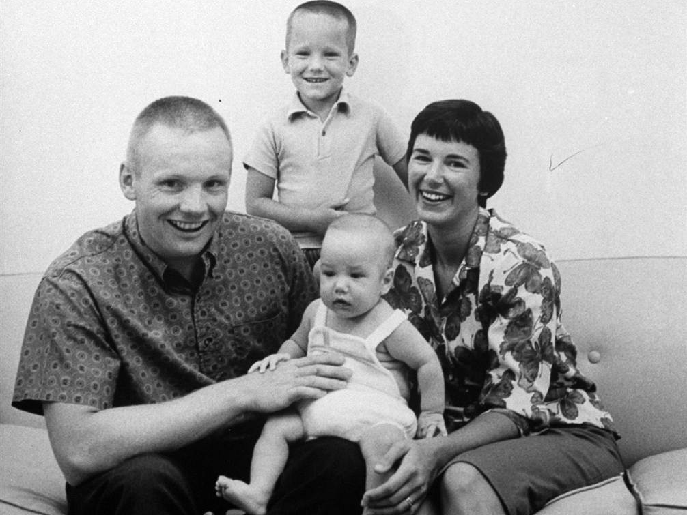

 El papa Juan Pablo II tuvo conexiones con varias personas, entre ellas la filósofa Anna-Teresa Tymieniecka y el padre Marcial Maciel.
Anna Teresa Tymieniecka Filósofa estadounidense de origen polaco Mantuvo una relación de amistad con Juan Pablo II durante más de 30 años Se conocieron en 1973, cuando el futuro papa era el arzobispo de Cracovia Ella se ofreció a trabajar con él en un libro de filosofía
Juan Pablo II y el Padre MacielJuan Pablo II nombra al padre Maciel como Consultor permanente de la Congregación para el clero. Maciel estuvo muy cerca de Juan Pablo II, quien llegó a citarlo como "un ejemplo del trabajo pastoral en favor de la expansión del Reino de Dios".
◉No tengáis miedo
◉El futuro empieza hoy, no mañana
◉El amor que no puede sufrir no es digno de llamarse amor
◉La libertad no consiste en hacer lo que nos gusta, sino en tener el derecho de hacer lo que debemos